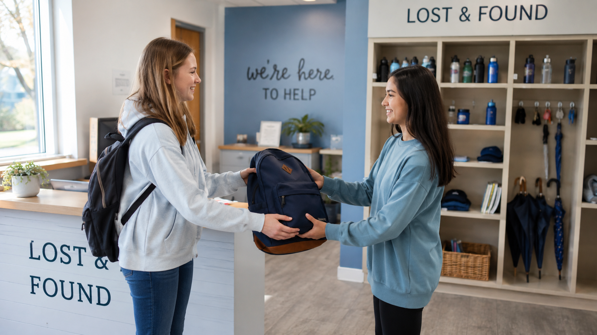

Varför skapade vi Lost&Found?
Vi har skappat Lost&Found för att göra det enklare att hitta borttappade föremål. Många mäniskor tappar varje dag sina nycklar, väskor telefoner och andra värdesaker. Med vår webbplats kan användrarna raportera borttappade eller upphittade föremål och på så sätt öka chancen att saker hittas tillbaka till sina ägare

Våra värderingar
🤝 Hjälpsamhet
Vi hjälper dig att hitta dina borttappade tillbehörigheter på ett enkelt och tryggt sätt.
🔒 Trygghet
Vi behandlar alla upphittade föremål med omsorg och respekt
⚡ Snabb service
Vår service är snabb och säker och öppet i alla dagar från kl 00:00-23:58.